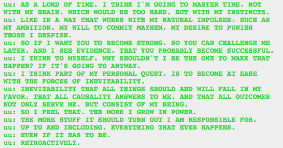

Which is precisely the attitude Vriska had. And Tavros, sort of. That they should cause things that they know will happen.
I can’t imagine why he thinks everything will turn out fine for him. Is he even capable of feeling doubt, though? I mean, inevitability means that it can be just as likely that he’ll inevitably be vanquished as that he’ll inevitably be victorious. But I guess if he took that into consideration he wouldn’t be Caliborn.